FORMAT
Captures desktop
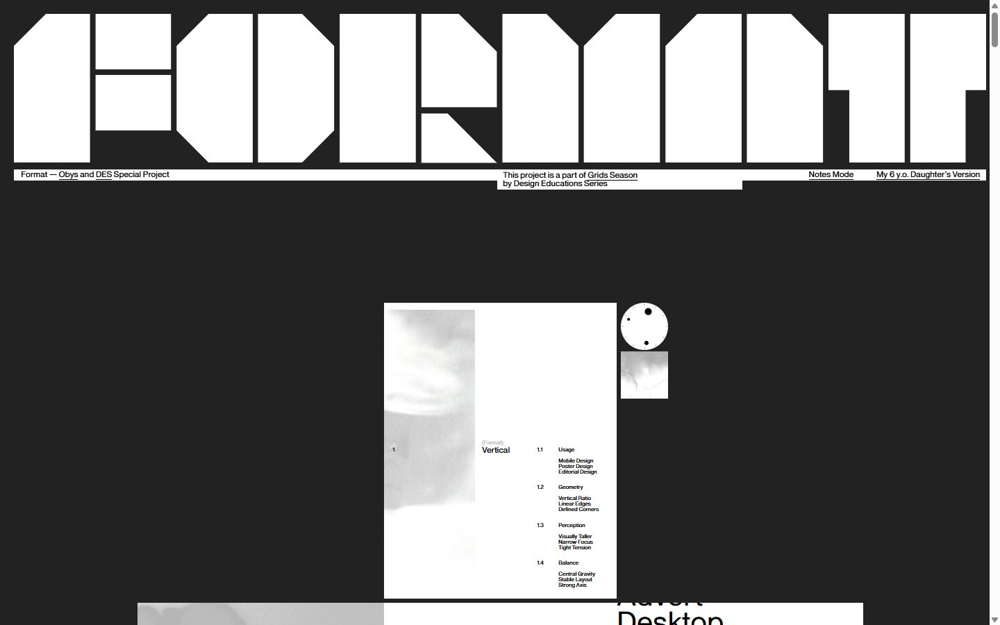

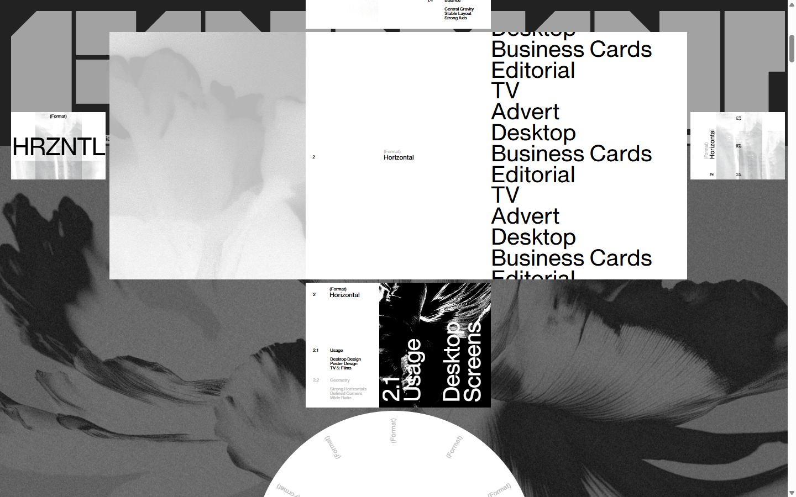
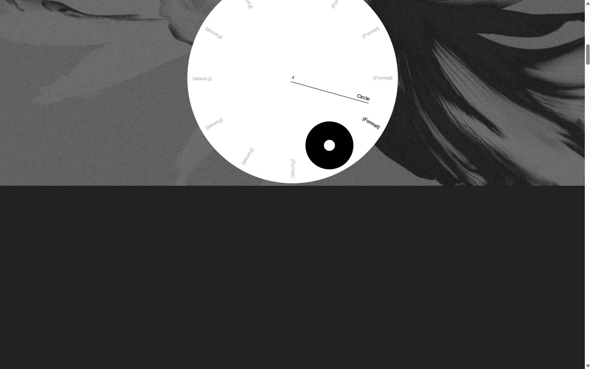
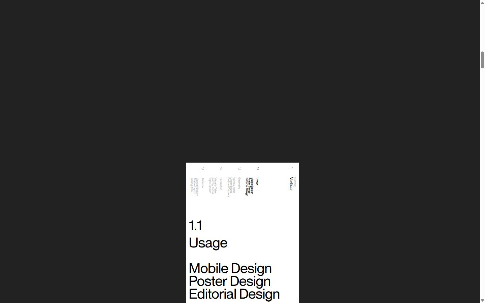
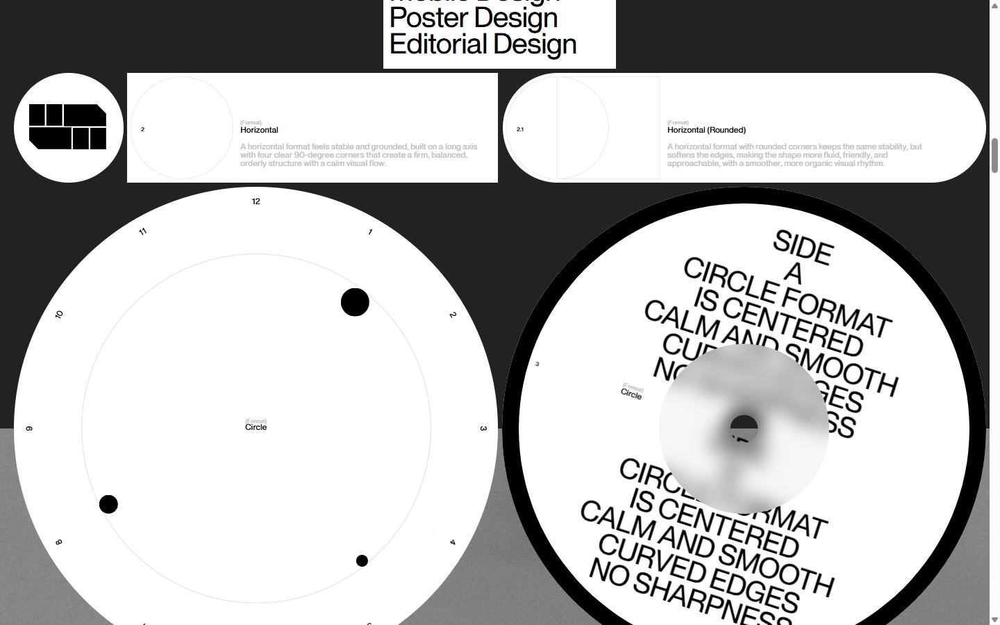
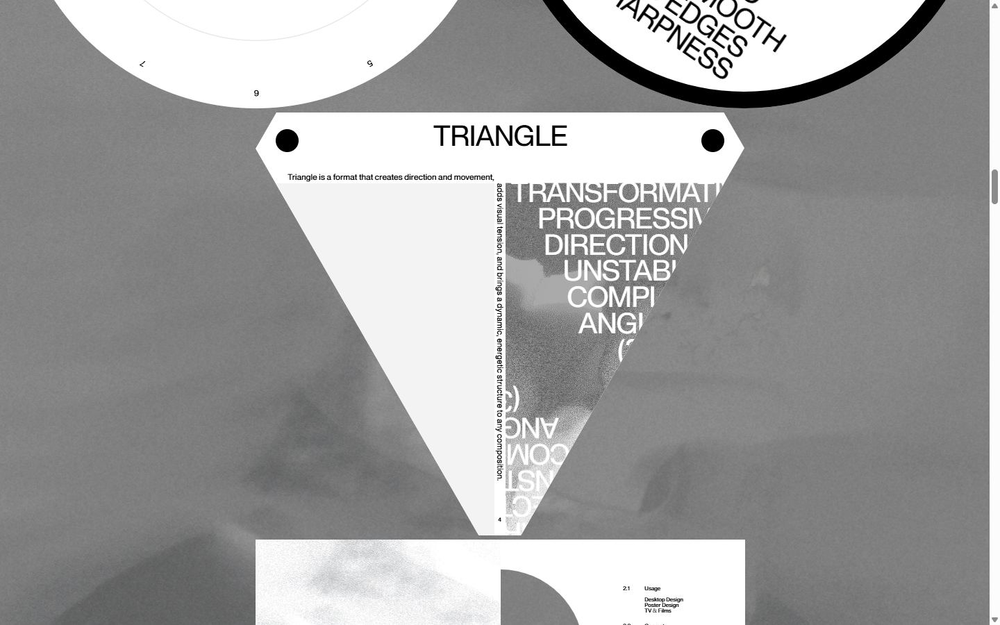
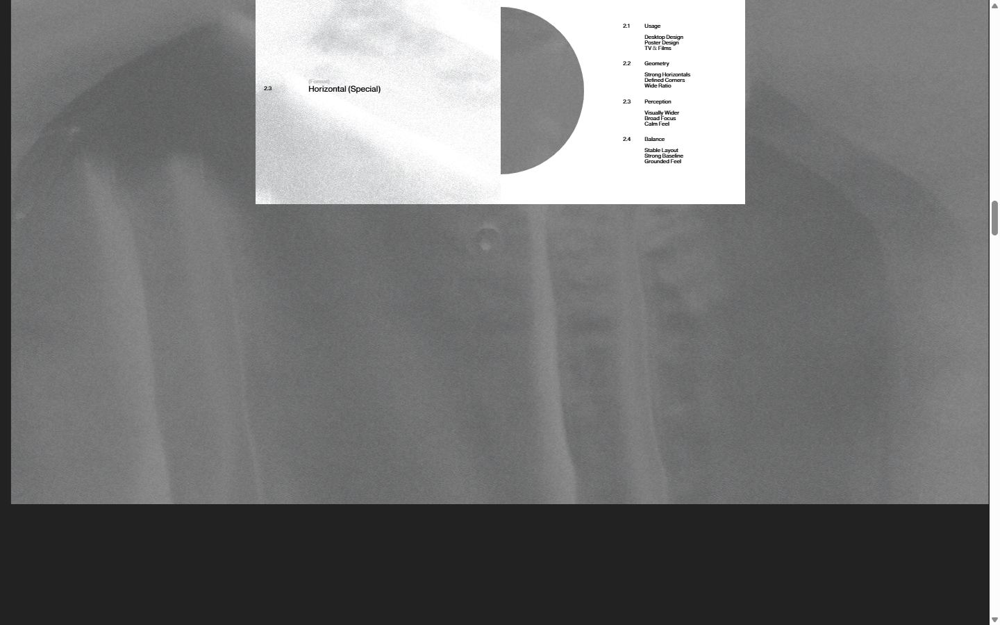
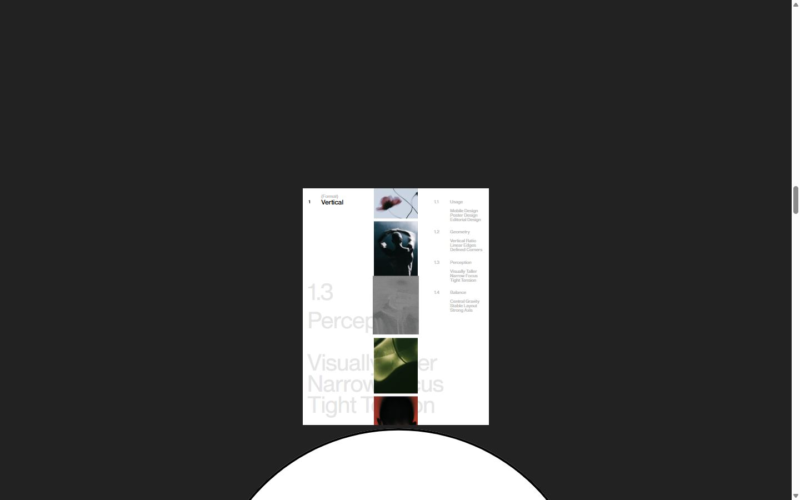
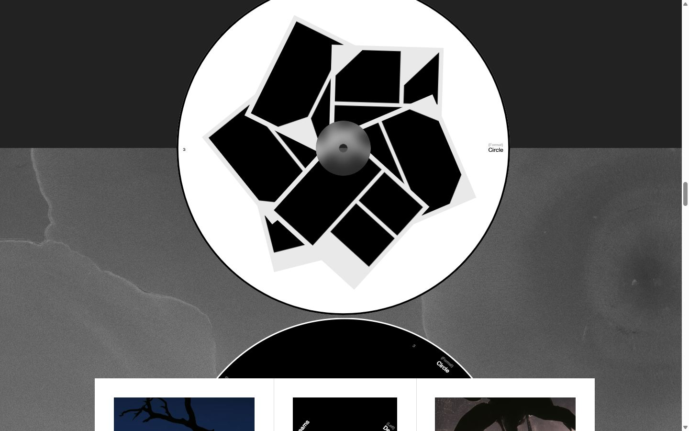
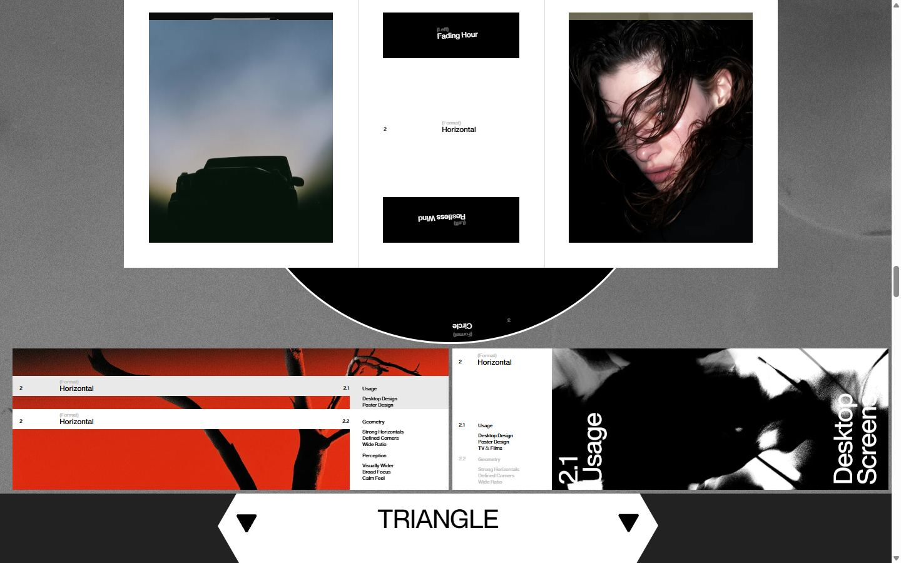
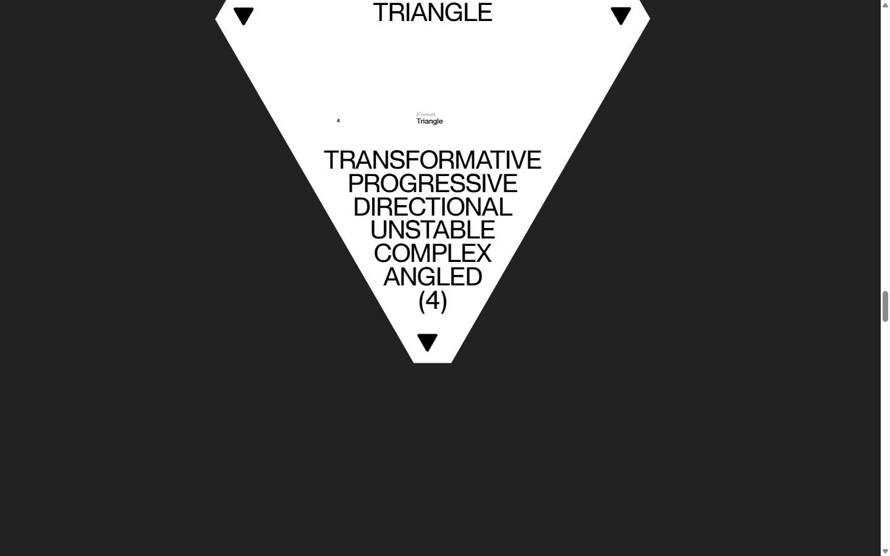
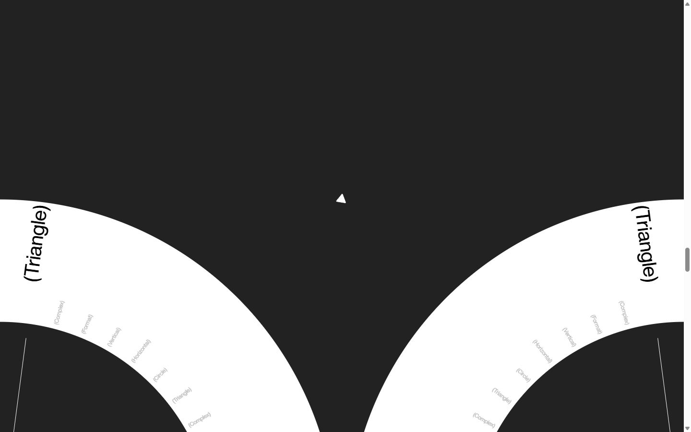
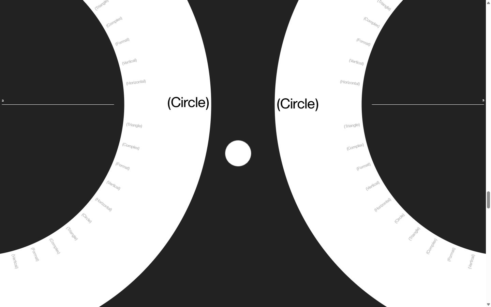
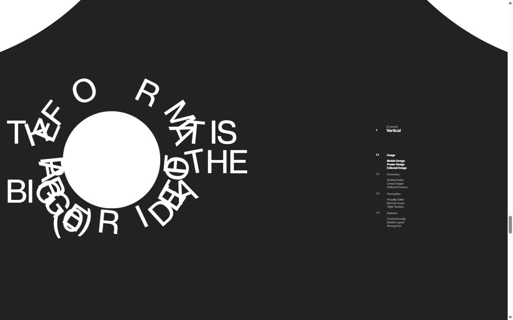
Mobile
Stack détectée
GSAP, Lenis, Matter.js, ScrollTrigger, SplitText/SplitType, Virtual scroll
Versions : GSAP 3.11.0 · Three.js r?
Design tokens
Couleurs (fonds, pondérées par surface)
#ffffff · #222222 · #d9d9d9 · #000000 · #d1d1d1 · #e9e9e9 · #dedede
Couleurs de texte
#000000 · #bfbfbf · #ffffff
Polices utilisées (par volume de texte)
Obys Sans
Fichiers de police chargés
Typographie
| Élément | Police | Taille | Graisse | Interligne | Interlettrage | Casse |
|---|---|---|---|---|---|---|
| h2 | "Obys Sans", system-ui, sans-serif | 12px | 400 | 18px | normal | none |
| p | "Obys Sans", system-ui, sans-serif | 12px | 400 | 18px | normal | none |
| a | "Obys Sans", system-ui, sans-serif | 12px | 400 | 12px | normal | none |
| button | "Obys Sans", system-ui, sans-serif | 12px | 400 | 18px | normal | none |
| body | "Obys Sans", system-ui, sans-serif | 16px | 400 | normal | normal | none |
Échelle des tailles de texte
8px (228) · 42px (179) · 12px (79) · 92px (33) · 3.50904px (13) · 5px (6) · 43.9695px (4) · 45.316px (1) · 2.33936px (1)
Arrondis
50% · 79px
Transitions CSS fréquentes
Points de rupture (media queries)
767px · 620px
Animations CSS (@keyframes)
field-flick
Variables CSS (:root)
--s: calc(100vw / 1440); --color-bg: #222; --color-logo: #fff; --color-plate: #fff; --color-plate-ink: #000; --color-nav-muted: #939393; --color-dial: #fff; --color-mark: #bfbfbf; --color-mark-active: #000; --color-hand: #000; --color-dot: #000; --color-note: #e0ddbf; --color-note-ink: #000; --layer-header: 0; --layer-content: 1; --layer-burst: 10; --layer-curtain: 50; --parallax: 70; --drift: .07; --grid-columns: 8; --grid-margin: 20; --grid-gutter: 20; --content-width: 1400;
Structure de la home
Hauteur : 15451 px — 1044 nœuds DOM — canvas 0, vidéos 0, images 87
| # | Bloc | Hauteur | Titre | Médias |
|---|---|---|---|---|
| 1 | div .logo-fixed | 215 | 0 | |
| 2 | div .screen | 810 | 0 | |
| 3 | article .block-one | 426 | Vertical | 4 |
| 4 | div .ground | 999 | 1 | |
| 5 | article .wide | 448 | Horizontal | 2 |
| 6 | section .clock-section | 513 | 1 | |
| 7 | div .fog | 1290 | 1 | |
| 8 | section .deck | 426 | Vertical | 7 |
| 9 | div .seven__ground | 1701 | 1 | |
| 10 | div .seven | 2646 | Horizontal | 28 |
| 11 | section .fan | 697 | Circle | 15 |
| 12 | section .win | 697 | 9 | |
| 13 | section .vee | 841 | Triangle | 5 |
| 14 | section .gauge | 2050 | 0 | |
| 15 | section .poster | 1617 | The format is Part of the Bigger idea (0) | 2 |
| 16 | section .field | 1247 | 0 | |
| 17 | footer .footer | 273 | 0 | |
| 18 | div .clock-spacer | 2882 | 0 |
Navigation : Obys · DES · Grids Season · Obys · DES
Boutons / CTA :
SEO
Plan des titres
Performance (mesure locale, Chrome headless, connexion non bridée)
Mobile
Fichiers
captures/ : arrivée, scroll desktop (1440×900), pleine page, pages internes, mobile (390×844 @2x) ; vidéo de scroll dans la release GitHub « videos » (lien en haut de fiche)page.html : DOM rendu · styles.css : CSS chargé · scripts/ : JS chargé (index dans _index.json) · shaders.glsl : shaders extraits · rea-bundle.json : analyse REA du bundle (chunks, routes, endpoints)